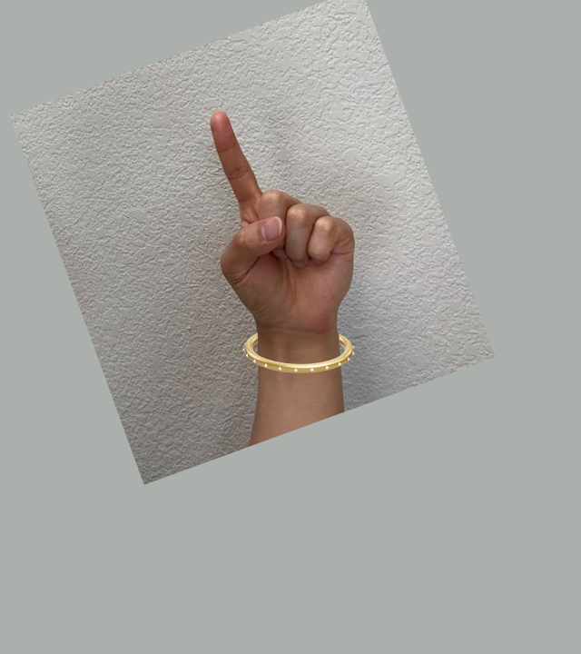
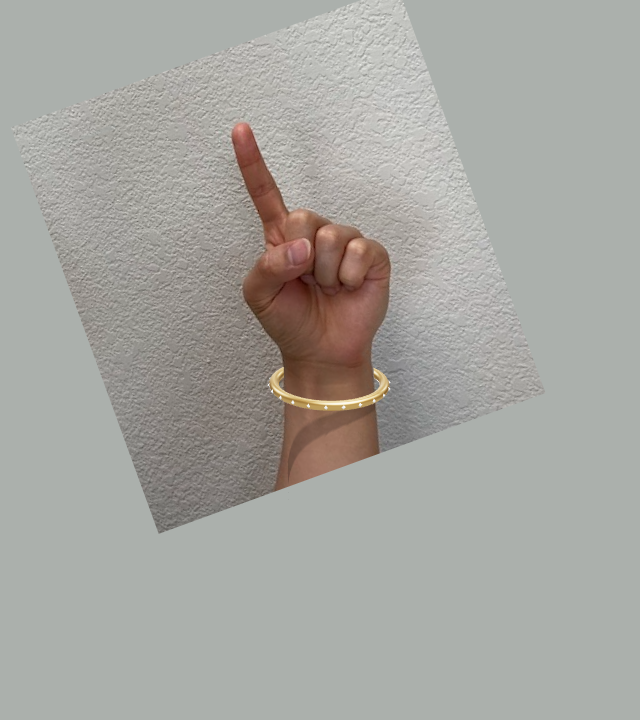

MediaPipe VIDEO thực trên ảnh/canvas xoay trong mặt phẳng; không phải webcam hoặc lật cổ tay3D thật. Các kiểm tra 0°/20°/45°/90°/180° là dữ liệu có kiểm soát.


Full pixels: 2674 · visible: 1741 · hidden: 878 · hidden ngoài foreground: 0 · đối chứng không mask: 1. Foreground không phải ground truth độ sâu; khác biệt nhỏ ở control này không chứng minh mọi lỗi chữ C đều do mask.
Model/material/light giữ nguyên; Upload15 PNG byte-identical baseline. Xem report.json, debug-log.json, upload-regression.json và docs/live-wrist-axis.md. Chưa nghiệm thu webcam người thật.